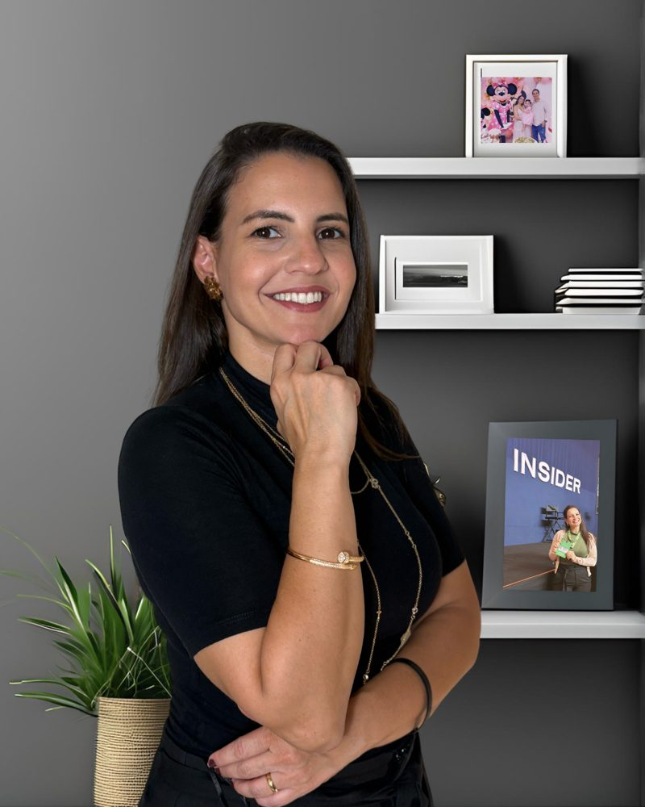

Método autoral + primeiras vendas em até 90 dias — sem lançamento e sem exposição amadora.
Psicólogo, advogado, nutricionista, médico, consultor. Anos de profissão, agenda cheia — e a renda 100% presa ao seu tempo. Você quer vender o que sabe além do atendimento 1 a 1.
Você tem autoridade no que faz, mas não pode — nem quer — se expor antes da hora. Quer construir e validar o negócio digital em silêncio, enquanto mantém o emprego.
A estabilidade que era sonho virou teto. Você quer uma transição segura: método estruturado e primeiras vendas validadas antes de qualquer decisão definitiva.
⚠️ Essa estratégia não é para afiliados, dropshipping ou negócios locais.
Todo dia você abre o Instagram com a intenção de postar. E fecha sem publicar nada.
E se você já tentou — curso de marketing, tráfego — sabe que cada tentativa frustrada vira mais uma "prova" de que não é pra você.
Não é preguiça. Não é falta de disciplina. E — presta atenção — não é falta de marketing.
O mercado inteiro te vende a mesma sequência: presença → audiência → produto → venda. Você tenta seguir e trava logo no primeiro passo.
A verdade que ninguém te contou:
Você está tentando vender um método que ainda não existe como método.
Seu conhecimento está organizado na sua cabeça como trajetória profissional — não como transformação pra outra pessoa. Por isso, quando tenta criar o produto, tenta colocar tudo. E o resultado fica gigante, confuso, impossível de explicar numa frase.
E tem uma segunda camada, mais silenciosa: te ensinaram que seriedade é sinônimo de impessoalidade. Que o diploma na parede vale mais que a sua história.
Método sem história é commodity. E commodity não vende — não importa quanto marketing você coloque por cima.
Por que a sequência é método → venda → validação → presença → escala — e por que quem inverte passa anos produzindo conteúdo sem vender.
Como colocar a sua vida dentro do que você ensina — o passo que torna o seu método impossível de copiar.
Como fazer as primeiras vendas em ambiente controlado, pra quem já te admira — validação com dinheiro real, sem palco e sem live.
"Tem 4 anos que estudo pra conseguir desenvolver um produto e não acredito que consegui — com um método que tem o nome da minha empresa e módulos de como eu penso."
Hilda"A clareza, a firmeza e a eficiência do método. Realmente capaz de transformar minha autoridade em um negócio sólido, escalável e profissional."
Rosiani"...estou sentindo o esclarecimento que desejava há 9 anos."
Anália, médica"Cada conversa com ela me gera muitos insights. Ajuda em tudo — estrutura, copy e até precificação."
Evelyn"Você não apenas fala sobre evolução, você vive isso. Sua jornada me prova que não se trata mais de 'se' vou emplacar, mas 'quando'."
Dalvelyn
Por fora, o currículo era impecável: administradora, contadora, auditora, duas pós, primeiro lugar em concurso público. Por dentro: 13 anos presa num cargo que reconhecia a competência dela — e bloqueava o crescimento.
No digital, ela fracassou com todas as credenciais certas. Investiu R$50 mil na melhor mentoria do país — e não escapou de fracassar. Estava no lugar certo, no momento errado: era a expert despreparada pra ser lançada, apesar de todo o conhecimento que tinha. Depois, faturou mais de R$200 mil lançando para outros experts — e perdeu o contrato do dia pra noite.
Treze anos presa no serviço público. Oito fracassos no digital. Até entender o que ninguém ensina: ter conhecimento de sobra não é estar preparado. Preparado é quem estrutura o próprio método e valida ele em vendas reais — as Vendas Secretas, antes de qualquer exposição.
Em 28 de fevereiro de 2024, pediu exoneração de um cargo de quase R$20 mil por mês. Hoje é mentora de método — ajuda especialistas experientes a estruturarem o que sabem e fazerem as primeiras vendas, sem repetir os erros que ela pagou caro pra aprender.
Daqui a cinco anos, você pode estar exatamente onde está hoje — trocando tempo por dinheiro, adiando o começo, alimentando a dúvida.
Ou pode olhar pra trás e apontar o dia em que decidiu estruturar o que já sabia.